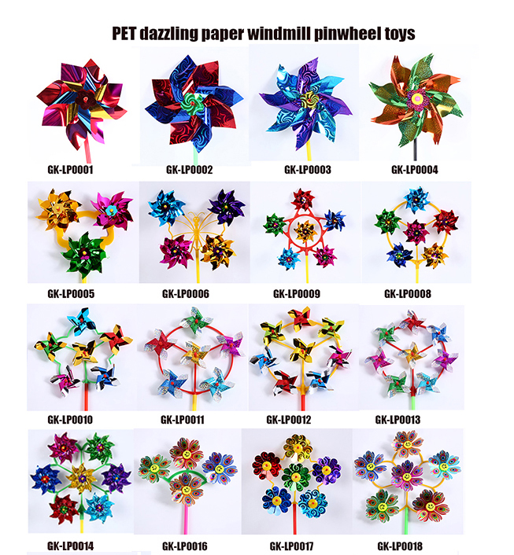
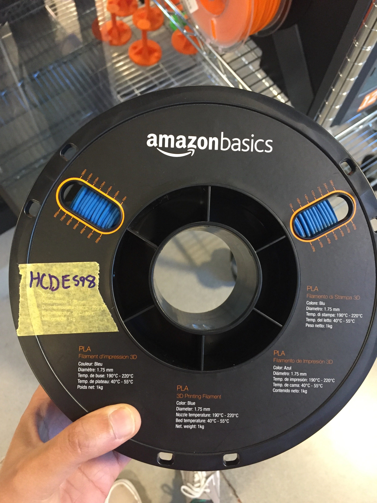
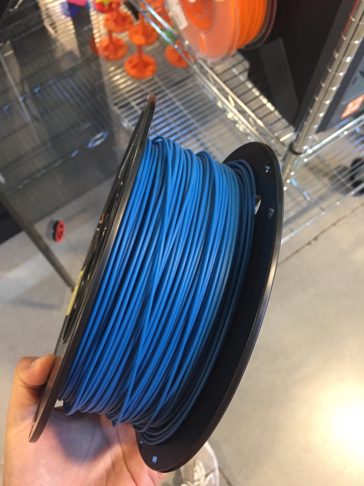
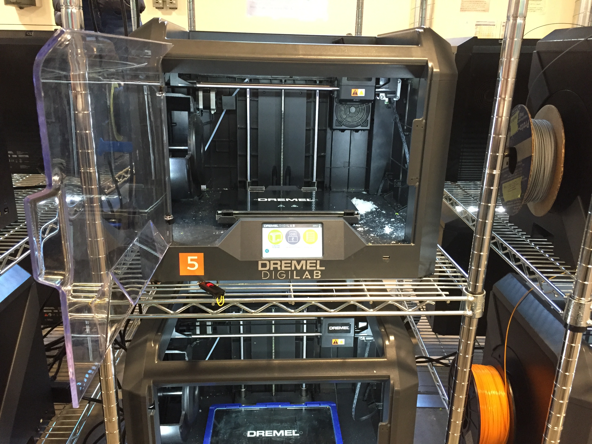
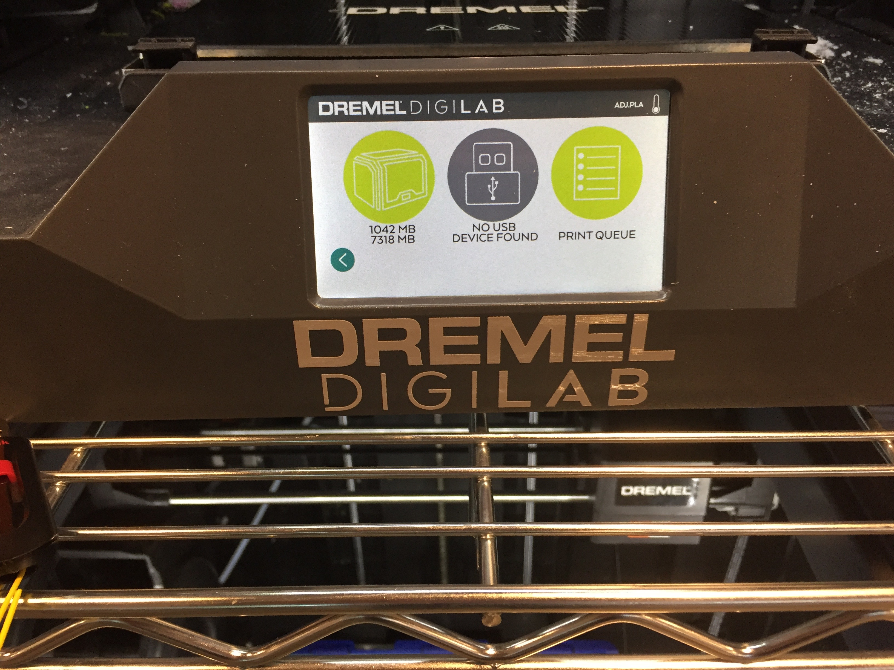
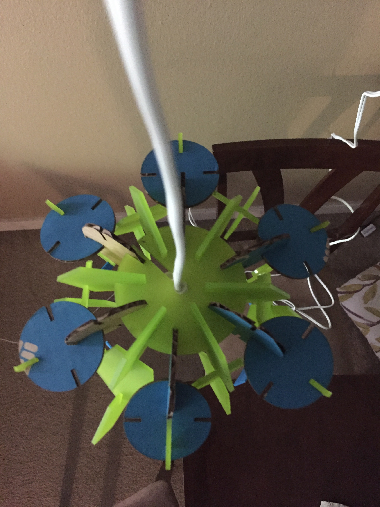
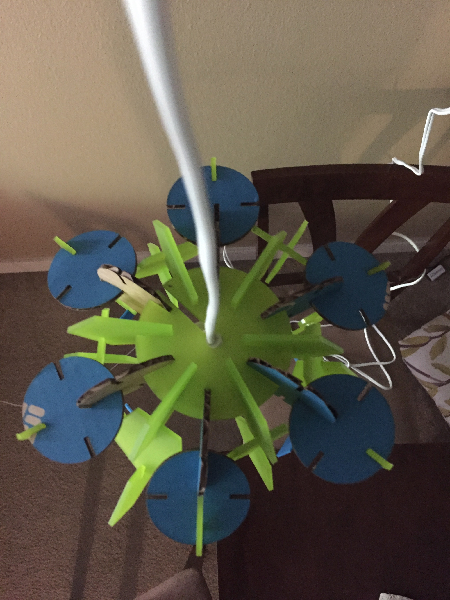

A4: Moving parts

For this assignment I wanted to make something fun, so I decided to make a pinwheel!
I started by sketching the parts.
 Then I moved on to create the shapes in Onshape which went pretty smooth.
Sizing:
Rivet size(max) = 8mm
Rivet size(min) = 6mm
Acrylic sheet thickness = 2.1 mm
After creating the shapes in Onshape, I exported the shapes onto Illustrator individually and placed them together in order to cut them using the laser cutter.
Final shapes created using Illustrator:
Then I moved on to create the shapes in Onshape which went pretty smooth.
Sizing:
Rivet size(max) = 8mm
Rivet size(min) = 6mm
Acrylic sheet thickness = 2.1 mm
After creating the shapes in Onshape, I exported the shapes onto Illustrator individually and placed them together in order to cut them using the laser cutter.
Final shapes created using Illustrator:
 I went ahead and cut the shapes on an acrylic sheet using the laser cutter.
I used lab recommended settings.
Thickness of Notches = 0.1 in
Speed = 8%
Power = 100%
Frequency = 100%
I went ahead and cut the shapes on an acrylic sheet using the laser cutter.
I used lab recommended settings.
Thickness of Notches = 0.1 in
Speed = 8%
Power = 100%
Frequency = 100%
Laser Cutting at the Mill
 I went ahead and 3d printed six instances of the pentagon to add to the vines in different places.
I went ahead and 3d printed six instances of the pentagon to add to the vines in different places.
3D printing at the Mill
Filament used:   3D Printer and settings:   Printing in action: 
Though this was not the anticipated outcome, I did learn quite a lot while working on the assignment.
Things to consider next time:
1. Keep the fragility of material in mind while creating shapes.
2. Keep a reasonable space between a notch and overall shape.
3. Be flexible and use the tool that best suits your design, keeping in mind the time constraints.
Thanks to Dhwani for helping with the preparation of file to 3d print and to the Mill staff for all the help with the 3d printer.
Source Files:
Illustrator File for laser cutter
3D Printer input file

Though this was not the anticipated outcome, I did learn quite a lot while working on the assignment.
Things to consider next time:
1. Keep the fragility of material in mind while creating shapes.
2. Keep a reasonable space between a notch and overall shape.
3. Be flexible and use the tool that best suits your design, keeping in mind the time constraints.
Thanks to Dhwani for helping with the preparation of file to 3d print and to the Mill staff for all the help with the 3d printer.
Source Files:
Illustrator File for laser cutter
3D Printer input file